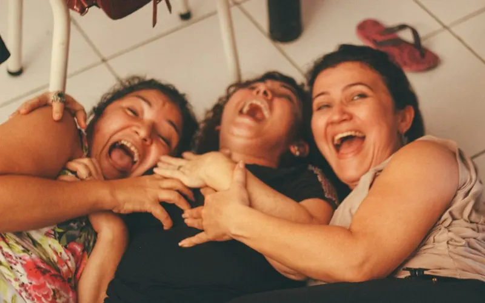

Cercanía
No es una experta con todas las respuestas: es alguien que facilita un espacio de encuentro, a tu lado.
Quién está detrás de BE YOU
Estoy creando BE YOU para que podamos encontrarnos, hablar sin juicios y construir nuevas conexiones.
La fundadora
Soy Belén Martínez Comas y estoy detrás de BE YOU · Create Your Life. Creo este espacio para que podamos encontrarnos, hablar sin juicios y construir nuevas conexiones, a tu ritmo.
Pendiente de completar con Belén. Su historia, sus valores y su formación o experiencia se añadirán cuando ella los confirme. Mientras tanto, no se publica nada que no sea suyo.
No es una experta con todas las respuestas: es alguien que facilita un espacio de encuentro, a tu lado.

Acompañamiento, educación emocional y apoyo mutuo. No es psicoterapia ni promete resultados clínicos.
Nadie te pide que cuentes más de lo que quieras. Participar es voluntario, siempre.